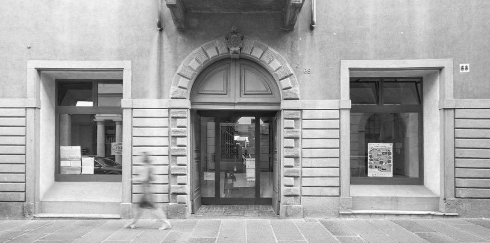
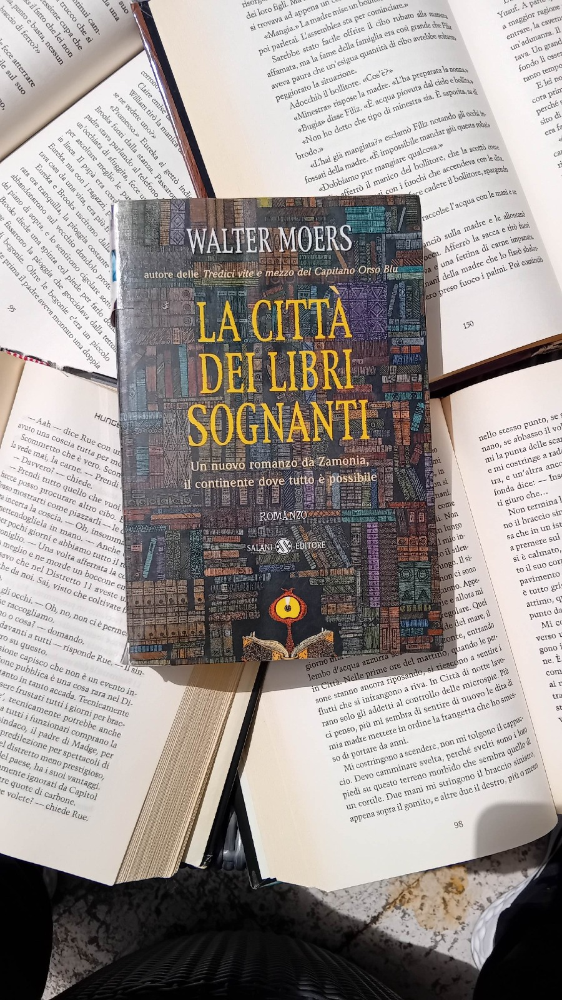
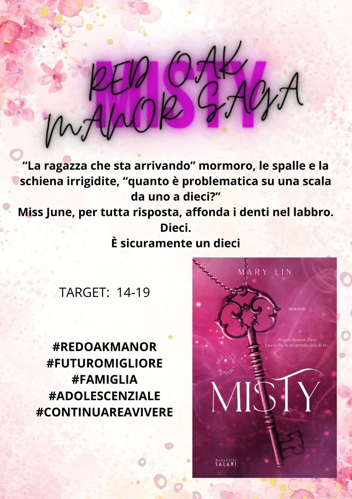
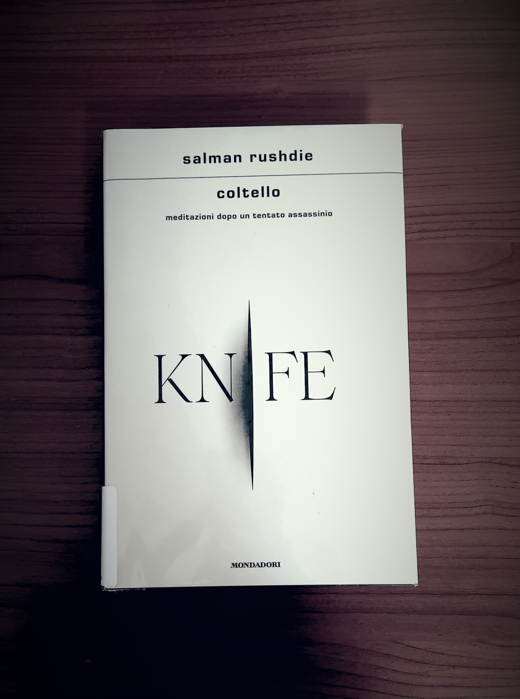
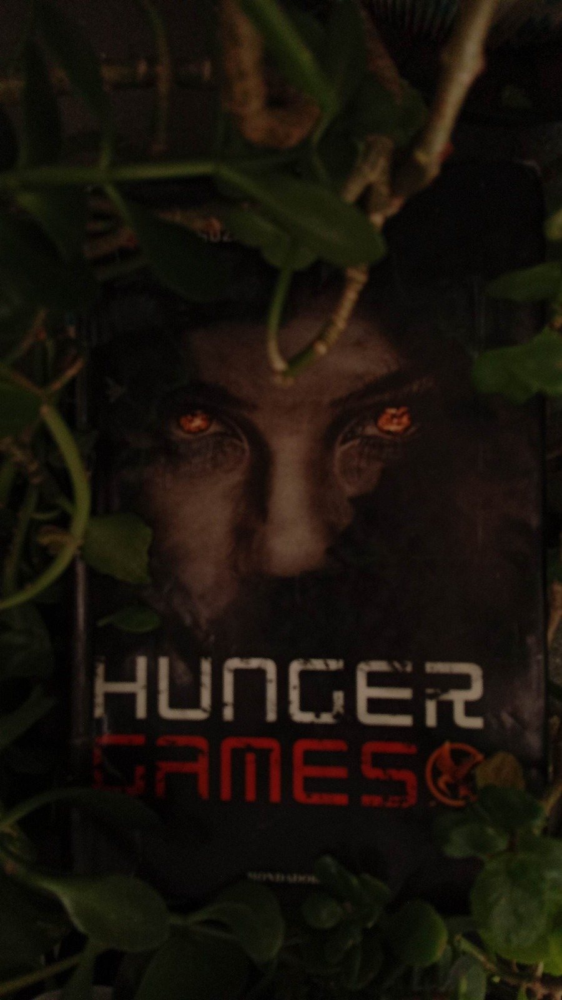

BIBLIOTECA COMUNALE
DI ALBINO
Un viaggio dietro le quinte del sapere, alla scoperta dell'organizzazione logistica, della catalogazione sistematica e della comunicazione social
Dietro le quinte del sapere
Immaginiamo una biblioteca. Tutti pensano al silenzio e ai libri ordinati. Ma avete mai pensato a tutto ciò che accade prima che un libro arrivi nelle vostre mani? La mia esperienza ad Albino è stata un viaggio nel cuore pulsante di un sistema complesso, un connubio perfetto tra logistica fisica e gestione digitale dei flussi informativi.
Il Percorso: La danza dei libri
Il PCTO non è stato un lavoro passivo, ma un'attività frenetica e strutturata che ha toccato tre macro-aree fondamentali:
- • Logistica e Flusso dei Libri: Ho gestito il servizio di interprestito, occupandomi di scovare i libri prenotati in sede e di organizzare accuratamente i pacchi con le sigle identificative per la spedizione e la suddivisione all'interno dell'intera rete bergamasca.
- • Catalogazione (L'ordine invisibile): Ho appreso e applicato sul campo le normative di catalogazione REICAT, imparando a mappare non solo gli scaffali fisici, ma le identità digitali delle storie stesse per renderle accessibili al database pubblico.
- • Comunicazione e Digital Storytelling: Ho supportato l'evoluzione della biblioteca sui canali social, ideando grafiche e post mirati per promuovere e consigliare al pubblico le nuove uscite editoriali in catalogo.


Il Cuore del Lavoro: Il "Target 14-19"
La sfida più bella e stimolante è stata senza dubbio quella di ideare strategie efficaci per avvicinare i ragazzi della mia età al mondo della lettura. Ho lavorato alla creazione di contenuti visuali dedicati a fenomeni editoriali moderni (come la "Red Oak Manor Saga" o "Misty"), transforming la promozione dei libri in un'esperienza vicina ai linguaggi social di oggi.


Bilancio Finale
Ho scoperto che la biblioteca non è un semplice deposito polveroso, ma un organismo vivente fatto di relazioni costanti. Lavorare fianco a fianco con i dipendenti e i volontari (anche con disabilità) mi ha donato una profonda prospettiva umana che nessun libro di testo scolastico avrebbe potuto trasmettermi.
"La soddisfazione più grande è stata scoprire titoli inaspettati che non avrei mai pensato di leggere e vedere l'impatto reale del mio lavoro organizzativo e promozionale direttamente sulla soddisfazione quotidiana dei lettori."

- • Catalogazione REICAT
- • Social Media Content
- • Gestione Database Interprestito
- • Team Working Allargato
- • Problem Solving Logistico
- • Adattabilità Relazionale